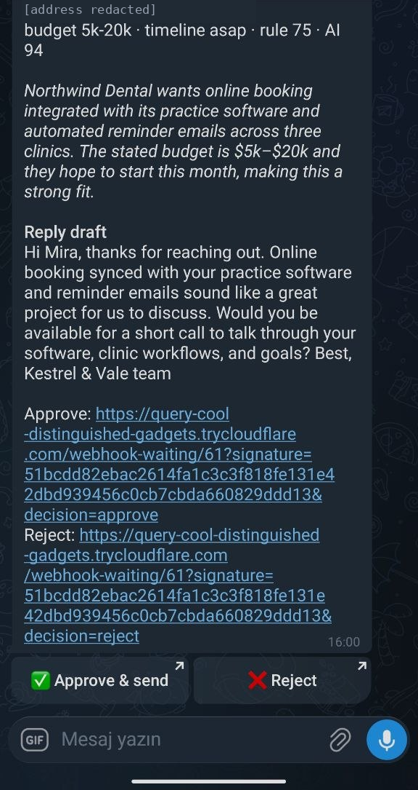
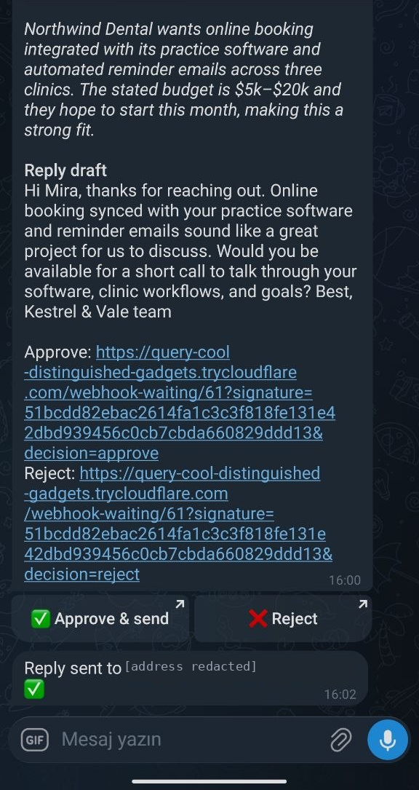
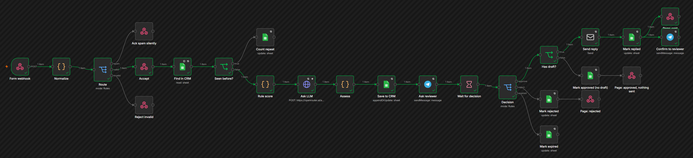

A self-hosted n8n workflow behind a web form. It validates the lead, checks a Google Sheets CRM for repeats, scores it twice (rules and an LLM) and writes a reply draft. Nothing is emailed until someone taps Approve in Telegram.
The machine took 13 seconds. The rest was a person deciding, which is the point.


The green line is the approve path this lead took. The red exits are the other outcomes; each links to the scenario that proves it below.
errors tab. The form still gets its 202. Tested →
The same run in the n8n editor (execution #61, n8n 2.40.7, self-hosted). On a phone, scroll it sideways.
If the two differ by 35 points or more, or the model raises a red flag, the Telegram message says so. The form text goes to the model as quoted data, without the full email address.
Real n8n, real Google Sheet, real LLM (openai/gpt-6-luna); Telegram and mail are local mocks in this dev run. Failures are made by redeploying with a broken setting, never by a test switch inside the workflow. Open any row to see the checks.
202 77 mspending_approvalok90/95/93http://localhost:5678/webhook-waiting/45?signature=…&decision=approve200From: "Kestrel & Vale Studio" <hello@kestrelvale.example>
To: approve.muideahl@northwind-dental.example
Subject: Re: your inquiry to Kestrel & Vale Studio
Message-ID: <38…{"d":"approve","at":"2026-09-26T12:33:09.559Z"}409422{"status":"invalid","errors":["email: invalid","name: required","message: at least 10 characters","consent: required"]}2020202200cold 21ok5rule 47 vs AI 5 | red flags: prompt injection attempt | intent otherHi Ivo, thanks for reaching out. If you have a specific website or automation project in mind, please share a little more about it; we’d be happy to arrange a short call …pending_approvalfailed: http: 503 - "{\"error\":{\"message\":\"mock: upstream unavailable\"}}"90 vs 903{"s":"expired","d":""}500The service refused the connection - perhaps it is offlinepending_approval202⛔ Lead intake failed at "Find in CRM": The resource you are requesting could not be found
Execution 54For the live run, n8n was reached through a temporary Cloudflare tunnel. The tunnel did not point at n8n but at a small path filter: only the form and the signed approval links pass. The editor and the API stay private.
POST /webhook/lead-intakepassesGET /webhook-waiting/<id>passesGET /404GET /rest/settings404GET /api/v1/workflows4045xx, which is why the form backend must retry on 5xx (safe, because nothing is written before the 202, and dedup catches repeats). When it happens as an approval resumes, the row stays pending_approval and the reviewer is alerted, but that approval has to be handled by hand. On a server this is rare. It is not zero.